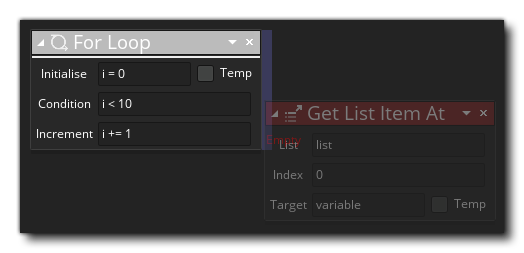
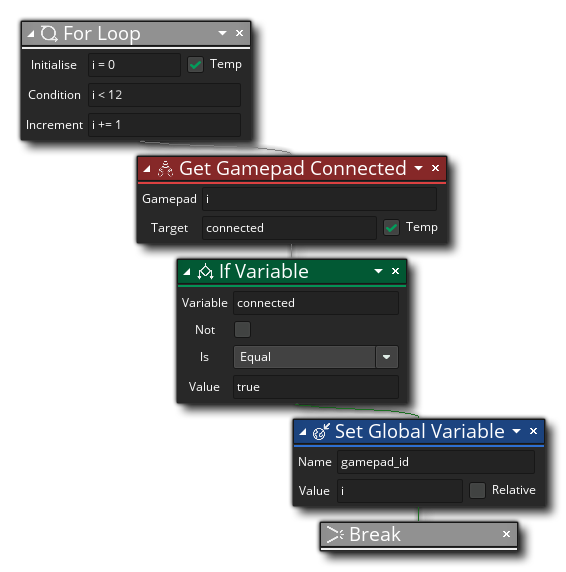

Descripción
La acción For se usa para realizar bucles que solo terminan cuando un valor alcanza la condición dada. Usted da un valor inicial como variable (que puede marcarse como una variable local temporal, generalmente es lo que desea), luego le da la condición para verificar la variable (por ejemplo, si es menor que un cierto valor), y finalmente la cantidad para incrementar la variable por cada iteración del ciclo. Entonces, el flujo general es el siguiente:
- Inicializa una variable a un valor
- Establece la condición para verificar esta variable contra
- Estableces cuánto debe incrementarse la variable con cada iteración del ciclo
- A continuación, agrega acciones en el ciclo, y éstas se ejecutarán para cada iteración hasta que la condición vuelva false o se encuentra una acción de pausa.
Al agregar acciones para realizarf dentro del ciclo, estas se agregan de la misma manera en que agregaría una acción a un "si", es decir, colocándola al costado de la acción en lugar de debajo de ella: 
Todas las acciones añadidas al lado se incluirán en For y se realizarán antes de que el evento o script continúe con las acciones agregadas en virtud de. Tenga en cuenta que puede finalizar cualquier bucle prematuramente si llama a la acción de interrupción, y cuando utiliza bucles for, no tiene que incrementar y también puede hacer que disminuya, siempre que la condición que utilice sea apropiada. Por ejemplo, establezca la variable inicial en 10, establezca la condición para verificar menos de 0 y luego establezca el valor de incremento en -1 y el ciclo iterará 10 veces, contando hacia atrás de 10 a 0.
Sintaxis de acción:

Argumentos:
Argumento Descripción Initialise Inicialice la variable que se usará para contar un valor (se puede marcar como una variable local temporal) Condition La condición para verificar para romper el ciclo Increment La cantidad para incrementar (o disminuir) la variable de recuento inicial para cada iteración del ciclo
Ejemplo:
El código de bloque de acción anterior ejecuta un for bucle para verificar y ver si un gamepad está conectado a cualquiera de las 12 "ranuras" disponibles. Si se descubre un gamepad, se establece una variable global en el número de ranura actual y el bucle se rompe.